Where's Waldo Image
where's waldo images are intricate works of art that have captivated millions of readers worldwide. Each illustration contains hundreds of individual characters, objects, and hidden details that make finding Waldo images both challenging and endlessly entertaining. This comprehensive guide explores the artistry, iconic scenes, and cultural impact of Where's Waldo images.
Where's Waldo Image Gallery
Explore these high-resolution Where's Waldo scenes perfect for finding Waldo images. Each image showcases the incredible detail and artistry that makes these illustrations so beloved. Click on any image to view it in full size!
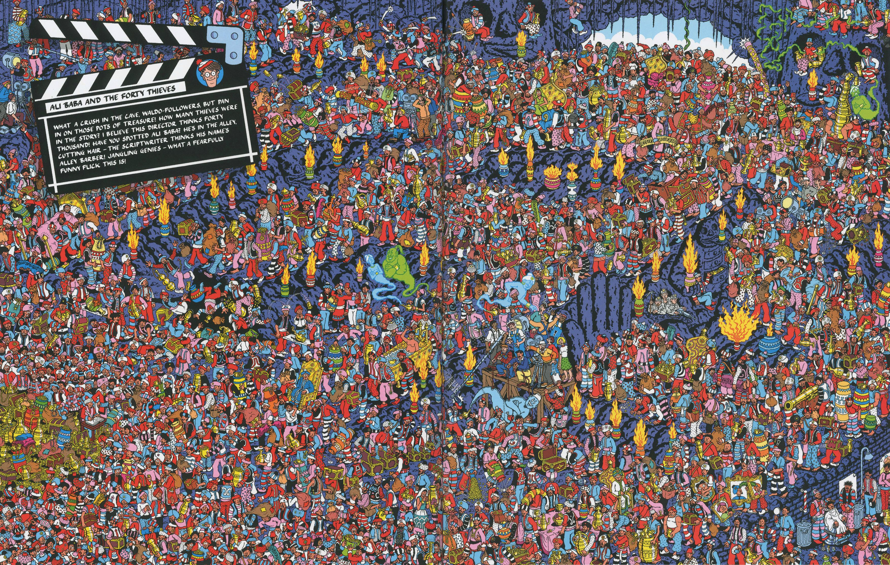
Waldo Scene 1
High-resolution scene with hundreds of characters
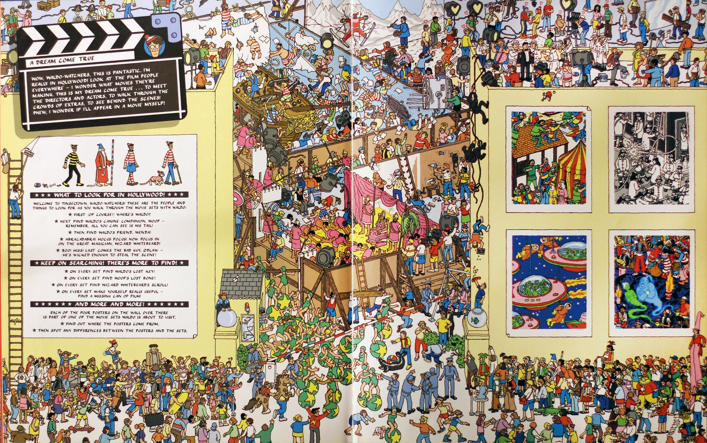
Waldo Scene 2
Intricate details in every corner
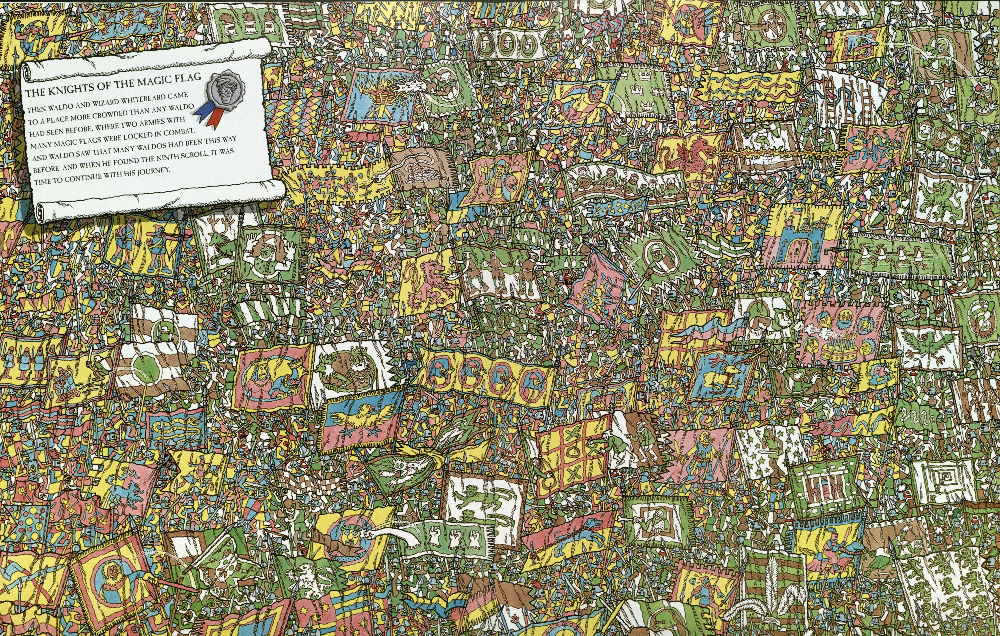
Waldo Scene 3
Dense crowds and hidden details
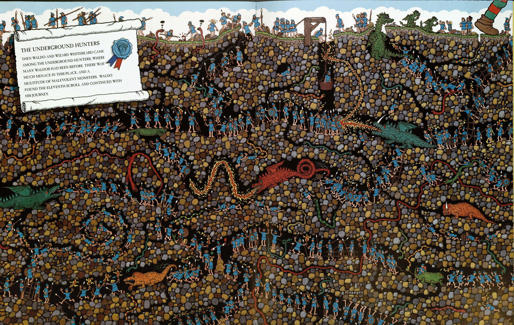
Waldo Scene 4
Bustling activity everywhere
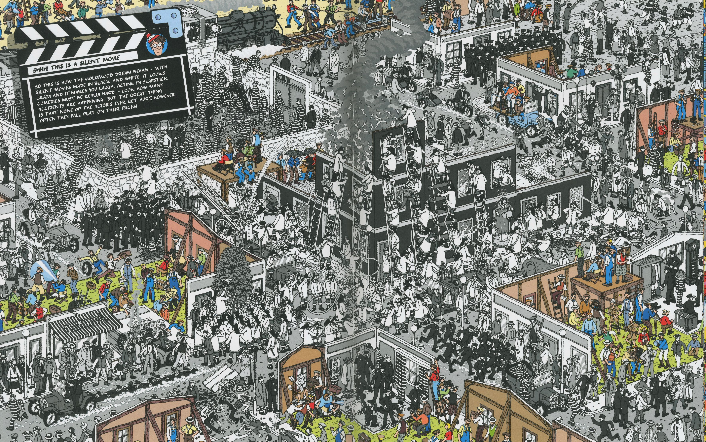
Waldo Scene 5
Classic Where's Waldo complexity
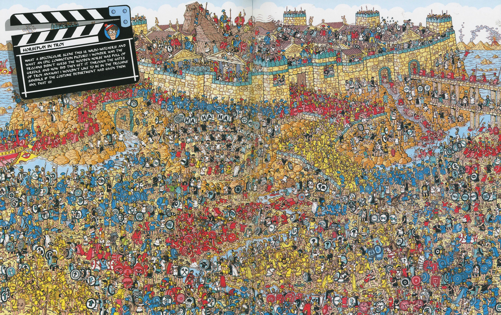
Waldo Scene 6
Incredible artistic detail
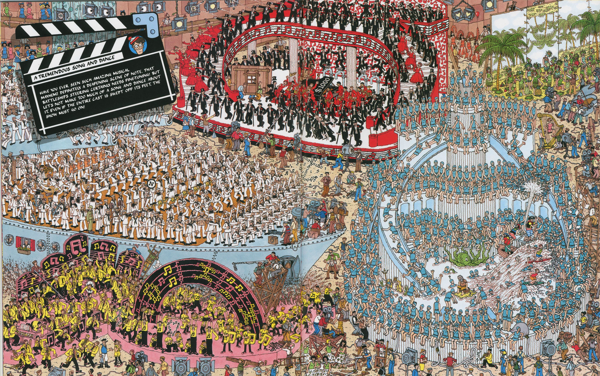
Waldo Scene 7
Packed with visual interest
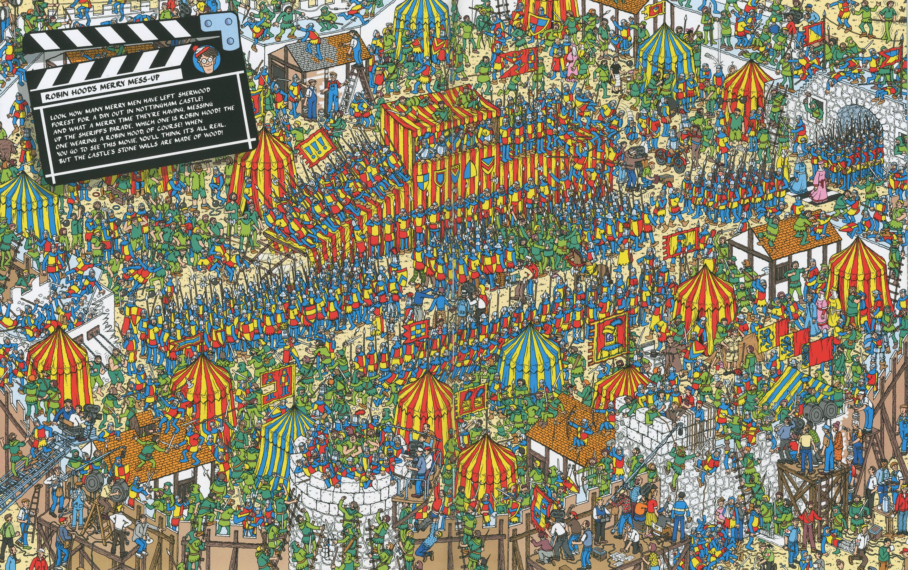
Waldo Scene 8
Vibrant and detailed illustration
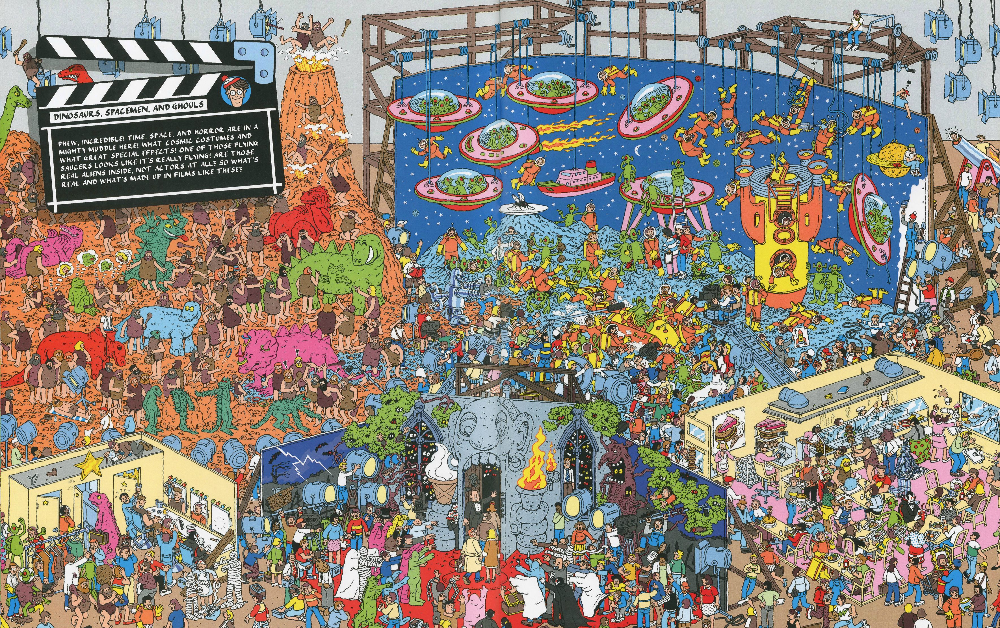
Waldo Scene 9
Masterful composition
Waldo Scene 10
Endless visual discoveries
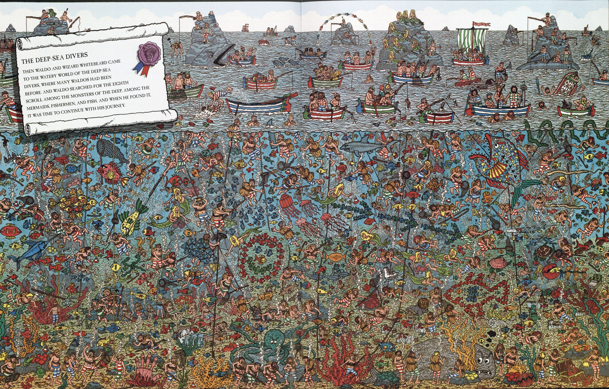
Waldo Scene 11
Handford's signature style
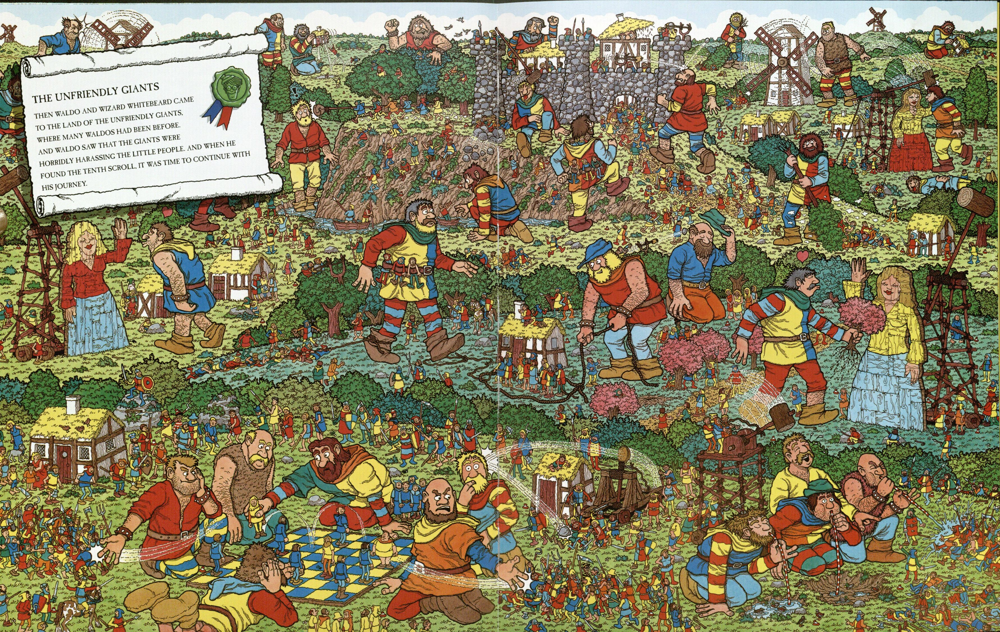
Waldo Scene 12
Iconic Where's Waldo artwork
The Evolution of Waldo Images
Comparing images from different eras reveals interesting evolution:
Early Books (1987-1990s)
- Slightly simpler compositions
- Traditional coloring techniques
- Focus on general crowd scenes
Modern Books (2000s-Present)
- More complex, layered compositions
- Digital coloring for brighter, more consistent colors
- Contemporary references and updated cultural elements
- Enhanced detail in backgrounds
Types of Where's Waldo Images
Throughout the series, several distinct categories of images have emerged:
Crowd Scenes
The classic format features dense crowds of people in various locations – beaches, sporting events, shopping centers, and festivals. These test pure observation skills.
Fantasy Worlds
Some images depict fantastical settings with imaginative creatures, magical elements, and surreal landscapes. These allow Handford to showcase creativity beyond realistic scenes.
Historical Recreations
Detailed depictions of historical periods provide educational value while maintaining the search-and-find challenge. The research and accuracy in these images is remarkable.
Modern Settings
Contemporary scenes in cities, airports, or theme parks connect with modern readers while showcasing current culture and activities.
The Art of Where's Waldo
Created by British illustrator Martin Handford, Where's Waldo images represent a unique artistic achievement. Each double-page spread took weeks to complete, with Handford meticulously hand-drawing every character and detail. The artistic style combines cartoon simplicity with incredible complexity, creating scenes that reward careful observation.
Artistic Characteristics
- Dense composition: Images contain 300-500+ individual characters
- Pen and ink technique: Originally created with traditional media
- Vibrant coloring: Bright, appealing colors that attract the eye
- Detailed backgrounds: Every inch of the page contains visual interest
- Consistent character design: Each character has a distinct appearance
Appreciating the Artistry
Next time you look at a Where's Waldo image, take a moment beyond just searching for Waldo. Notice the incredible detail, the clever visual jokes, the artistic skill in creating hundreds of distinct characters, and the thoughtful composition that makes each scene a masterpiece of illustrated storytelling. Martin Handford's Where's Waldo images represent some of the most intricate and beloved illustrations in children's literature.